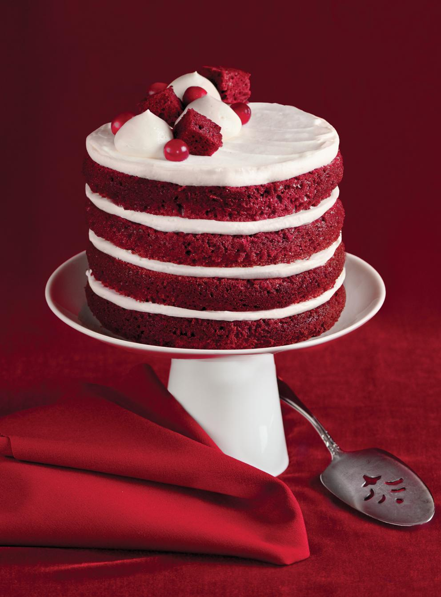

Recette de Gateau Red-Velvet

Gateau Red-Velvet MIAM
Ingredients
Gâteau
340 g (2 1/4 tasses) de farine tout usage non blanchie
30 ml (2 c. à soupe) de cacao, tamisé
10 ml (2 c. à thé) de poudre à pâte
2,5 ml (1/2 c. à thé) de bicarbonate de soude
Chantilly au fromage à la crème
1 bloc de 250 g de fromage à la crème, ramolli
140 g (2/3 tasse) de sucre
1 gousse de vanille, fendue en 2 et grattée
10 ml (2 c. à thé) de jus de citron frais
Préparation
Gâteau
Placer la grille au centre du four. Préchauffer le four à 180 °C (350 °F). Beurrer les parois de deux moules à charnière de 20 cm (8 po) de diamètre et tapisser le fond de papier parchemin.
Dans un bol, mélanger la farine, le cacao, la poudre à pâte, le bicarbonate et le sel. Réserver.
Dans un autre bol, mélanger le lait de beurre, le café, le colorant, le vinaigre et la vanille.
Chantilly au fromage à la crème
Dans un bol, fouetter le fromage à la crème avec le sucre, les graines de vanille et le jus de citron jusqu’à ce que le sucre soit dissous..
Montage
Couper et retirer la calotte des gâteaux refroidis pour les rendre plats. Dans la partie la plus épaisse d’une calotte, tailler quelques dés de gâteaux et réserver pour la décoration..
Placer la grille au centre du four. Préchauffer le four à 190 °C (375 °F).